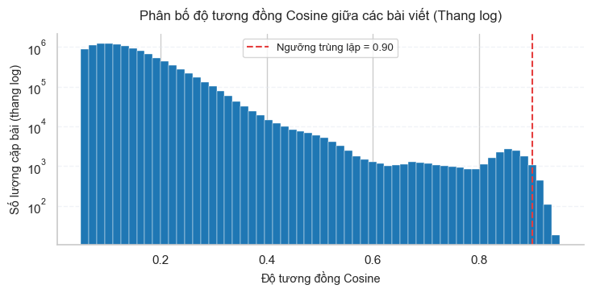
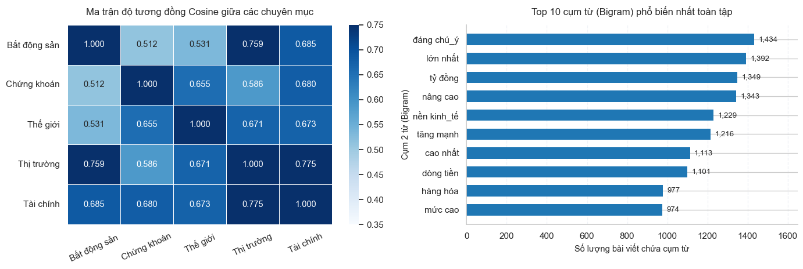
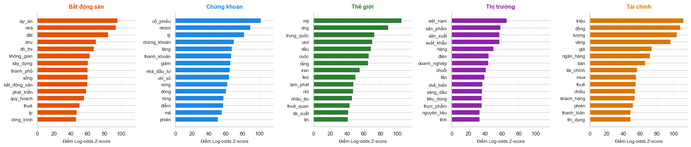
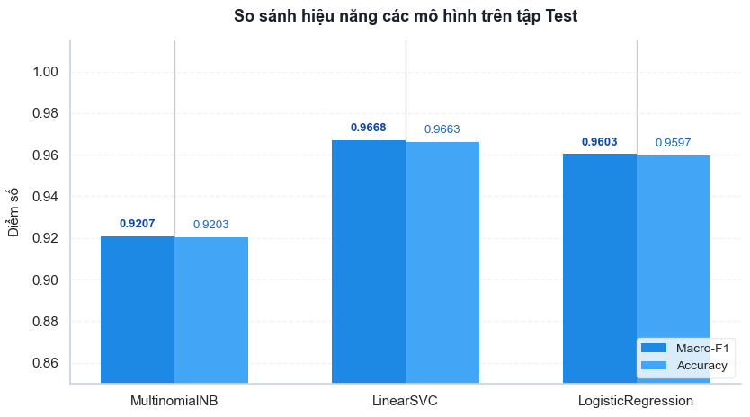
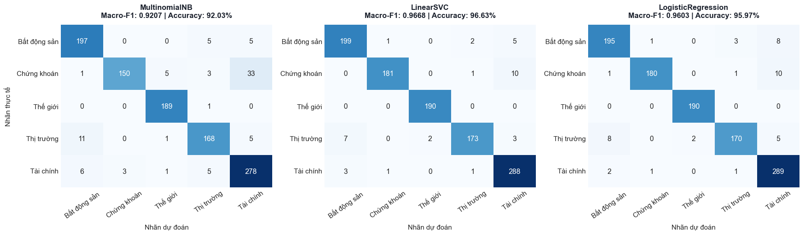

Vietnamese Financial News Classification
Thu thập tự động 5.000 bài báo kinh tế – tài chính từ VnEconomy.vn, chuẩn hóa tiếng Việt, kiểm soát rò rỉ cụm bài gần trùng và đối chiếu các mô hình phân loại đa lớp.
01. Tổng quan bài toán & Chỉ số chính
Multi-class NLP
Ngữ liệu gồm 5.000 bài báo (11/2025 – 11/2026) thu thập qua sitemap.xml của VnEconomy.vn, chia đều 1.000 bài cho mỗi chuyên mục theo chuẩn phân loại kinh tế JEL. Để tránh ảo giác hiệu năng từ các bản tin lặp định kỳ (giá vàng, blog chứng khoán) và văn phong phóng viên chuyên trách, dữ liệu được cô lập bằng StratifiedGroupKFold theo mã nhóm gần trùng (3.933 bài Train/Val, 1.067 bài Test độc lập).
02. 5 Chuyên mục mục tiêu & Độ giao thoa
1.000 bài / lớpNgữ liệu được làm sạch tuyệt đối (0 giá trị thiếu, 0 trùng ID/URL) và ánh xạ về 5 lớp kinh tế – tài chính:
03. Quy trình xử lý & Thực nghiệm
underthesea + TF-IDFChuẩn hóa Unicode NFC & Dấu thanh tiếng Việt
Đưa 193 bài chưa dựng sẵn về NFC và thống nhất 94.955 từ đặt dấu kiểu cũ (hoà, thuỷ) về kiểu mới (hòa, thủy).
Tách từ ghép & Phát hiện Near-duplicate
Phân đoạn bằng underthesea (rút gọn 1.075 âm tiết xuống 737 token/bài) và gom 18 cụm gần trùng bằng TF-IDF n-gram ký tự (Cosine ≥ 0,90).
Tối ưu lưới GridSearchCV (5-Fold Group CV)
Khảo sát n-gram (1,1) vs (1,2), tùy chọn lọc stopwords và tham số điều hòa cho LinearSVC, Logistic Regression và MultinomialNB.
Kiểm chứng độ ổn định & Phân tích biên quyết định
Chạy kiểm định McNemar, kiểm thử trên Test khử trùng, so sánh bóc tách số (text_seg vs text_num) và cô lập tác giả.
04. Khám phá ngữ liệu & Từ khóa đặc trưng
5.000 bài báoPhương pháp Log-odds Z-score bóc tách rõ nét từ khóa chuyên ngành, đồng thời ma trận tương đồng Cosine lý giải nguyên nhân nhầm lẫn tập trung ở cặp Thị trường – Tài chính (0,775) và Bất động sản – Thị trường (0,759).



05. Kết quả phân loại & Phân tích lỗi
Test 1.067 bài| Mô hình | Cấu hình tối ưu | CV Macro-F1 | Test Acc | Test Macro-F1 | CI 95% Bootstrap |
|---|---|---|---|---|---|
| MultinomialNB | α = 0,003 · (1,2) · bỏ SW | 0,9205 ± 0,0037 | 0,9203 | 0,9207 | [0,904; 0,936] |
| Logistic Regression | C = 30 · (1,1) · giữ SW | 0,9523 ± 0,0046 | 0,9597 | 0,9603 | [0,949; 0,971] |
| LinearSVC | C = 100 · (1,2) · bỏ SW | 0,9582 ± 0,0033 | 0,9663 | 0,9668 | [0,956; 0,977] |
Kiểm định McNemar giữa LinearSVC (1.031/1.067 bài đúng) và LogisticRegression (1.024/1.067) cho p = 0,118 (tương đương thống kê ở mức 5%). Trong 36 ca dự đoán sai trên tập Test, 23 ca (63,9%) nằm ở vùng biên mờ (< 0,5) do tin tức mang tính liên ngành.

